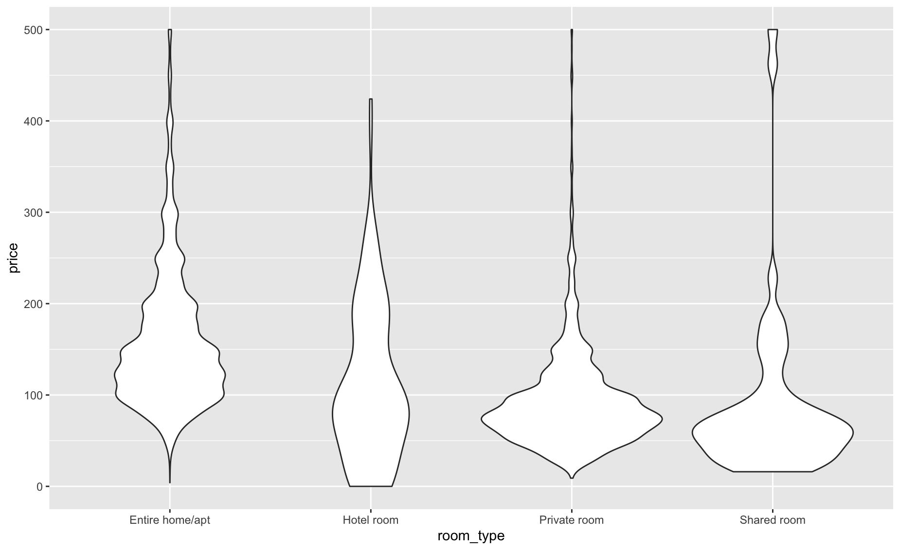
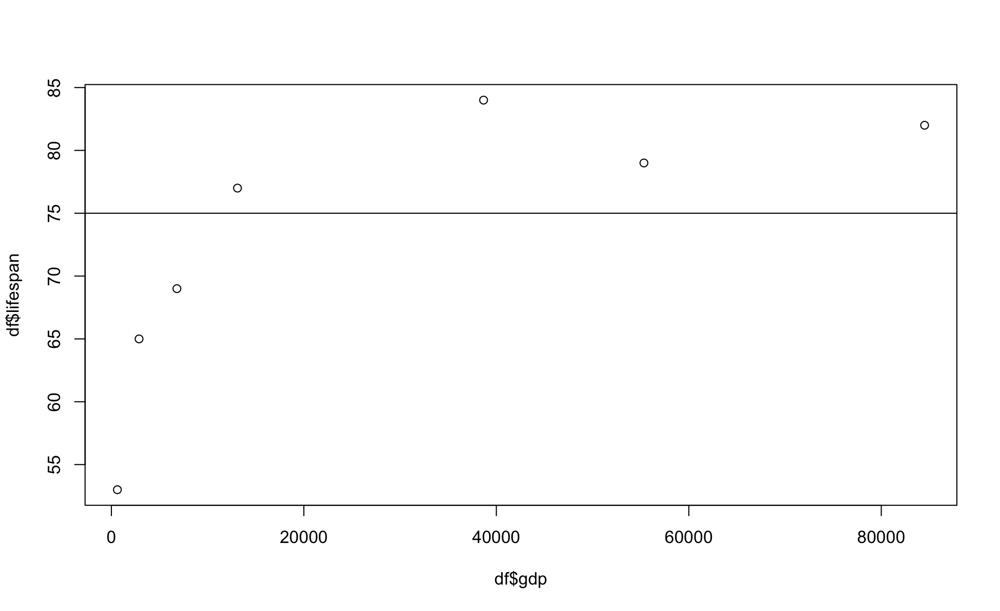

Module 17 Exploring data
Learning goals
- How to go about exploring a dataset and understanding the distribution of your data
- How to produce beautiful histograms and violin plots
Once you get your dataset into R, the first thing you will probably want to do is explore. Until you understand what your data look like, it is difficult to know how to analyze it. Exploratory data analysis is the process of becoming familiar with your data - its sample size, its distribution, its central tendencies, and its variation. This module shows you how.
To practice exploring datasets, we will use one of AirBnB listings in Amsterdam (go here and download listings.csv.gz under the Amsterdam section).
# Checkout what the data look like
# use t() to make it easier to read (t = transpose)
t(head(df,1))
1
id "2818"
name "Quiet Garden View Room & Super Fast WiFi"
host_id "3159"
host_name "Daniel"
neighbourhood_group NA
neighbourhood "Oostelijk Havengebied - Indische Buurt"
latitude "52.36435"
longitude "4.94358"
room_type "Private room"
price "59"
minimum_nights "3"
number_of_reviews "278"
last_review "2020-02-14"
reviews_per_month "1.9"
calculated_host_listings_count "1"
availability_365 "152"
# How much data do we have?
nrow(df)
[1] 17825Exploring distributions
One of the first steps in your data exploration will be to visualize your dataset. There are two main plot types for doing so: histograms and violin plots.
Histograms
A histogram sorts your data into bins and counts the number of data points in each bin.
Make histograms in R using the hist() function:
hist(df$availability_365)
This is a histogram of the number of nights the listings are available for reservation. In a quick glance, you can see that most listings are available for only a few nights, while a small portion have a wide variety of availabilities.
Think about how much more helpul this image is than a simple sample mean. To illustrate that value, let’s plot the mean onto this histogram.
hist(df$availability_365)
abline(v= mean(df$availability_365),col="red")
The average value of this dataset is nowhere near the most common values (1 - 20 nights), nor does it capture the fact that there are some listings available for the entire year. Punchline: a lot of rich insight is lost when taking an average, which is why a histogram is more useful for displaying distributions than bar graphs (which only show the mean).
Prettifying histograms
Let’s take a look at another variable: the price of lodging per night.
hist(df$price)
Not a very pretty plot. Since the range in prices is so wide, the default parameters for the hist() will need some tweaking.
To make this histogram prettier, first let’s manually set the number of “breaks,” i.e., the cutoff values for each bin along the x-axis.
# Calculate breaks -- make each bin one day
breaks <- seq(0,max(df$price),by=5)
hist(df$price,
breaks=breaks)
That’s better. Let’s zoom in on the most common values using xlim().
hist(df$price,
breaks=breaks,
xlim=c(0,500))
Finally, let’s improve the labels and colors.
par(mar=c(4.2,4.2,.5,.5))
hist(df$price,
breaks=breaks,
xlim=c(0,500),
xlab="Listing price ($)",
main=NULL,
col=adjustcolor("darkblue",alpha.f=.6),
border=adjustcolor("white",alpha.f=.1),
)
Interesting spikes in the histogram. Why do you think those are occurring? That is a really interesting feature of the dataset that you might never have discovered if you had not plotted your histogram.
Histograms in ggplot2
To produce a histogram of the same data in ggplot2, use the following code:
library(ggplot2)
ggplot(df, aes(x=price)) +
xlim(0,500) +
geom_histogram(binwidth=5,
fill=adjustcolor("darkblue",alpha.f=.6),
color=adjustcolor("white",alpha.f=.1)) 
ggplot2 allows you to add some other nice features to histograms, such as a smoothed “density” line:
ggplot(df, aes(x=price)) +
xlim(0,500) +
geom_histogram(binwidth=5,
fill=adjustcolor("darkblue",alpha.f=.6),
color=adjustcolor("white",alpha.f=.1),
aes(y=..density..)) +
geom_density(alpha=.1,lwd=1.5,col=adjustcolor("firebrick",alpha.f=.5))
Violin Plots
The second most valuable plot for exploring distributions is the violin plot.
ggplot(df, aes(x=room_type,
y=price)) +
geom_violin()
Violin plots are like vertical histograms. Their width indicates where most of your data are clustered, and the shapes also take the shape of a violin – hence the name. Their height shows you your data’s range. Think of a violin plot as the beautiful child of bar graphs and histograms: the best of both worlds.
A major advantage of violin plots is that they allow you two compare multiple distributions with ease. Let’s adjust our ylim() to zoom in:
ggplot(df,
aes(x=room_type,
y=price)) +
ylim(0,500) +
geom_violin()
If your research question were, “Which type of listing tends to be most affordable?” think about how easy that is to answer using a plot like this!
Descriptive statistics
In the Module on Calling Functions, you have already seen some functions for summarizing the trends and variation in your data:
mean()median()sd()(standard deviation)summary()provides descriptive statistics for each column in a dataframe.
Here are a few more:
var() provides the sample variance, which is related to standard deviation:
var(df$price)
[1] 23766.1MeanCI(), from the package DescTools, provides 95% confidence intervals for the most common data distributions.
install.packages("DescTools")library(DescTools)
MeanCI(df$price)
mean lwr.ci upr.ci
154.4959 152.2326 156.7592 And here are some other useful functions that need not be introduced in detail now. You will encounter them soon.
table()Counts the number of instances of each unique value in a vector.quantile()Provides the quantiles of a dataset.ecdf()Plots the empirical cumulative distribution function for a dataset.
Review exercise
For this exercise, use this dataset on the sale prices of homes in the United States. You can download that dataset directly into R using the following code:
library(readr)
df <- readr::read_csv("https://raw.githubusercontent.com/rashida048/Datasets/master/home_data.csv")Task 1
Create a beautiful histogram of home prices included in this dataset. Only show houses that sold for less than $2 million USD.
Task 2
Create a violin plot that shows the distribution of sale prices for homes with different numbers of bedrooms.
Task 3
This task is a bit of review, and a bit of a preview to the next module.
First, create a scatter plot that depicts the relationship between the square footage of a home’s living space and its sale price. Do the same for the square footage of the home’s lot. Which square footage appears to be a better predictor of sale price?